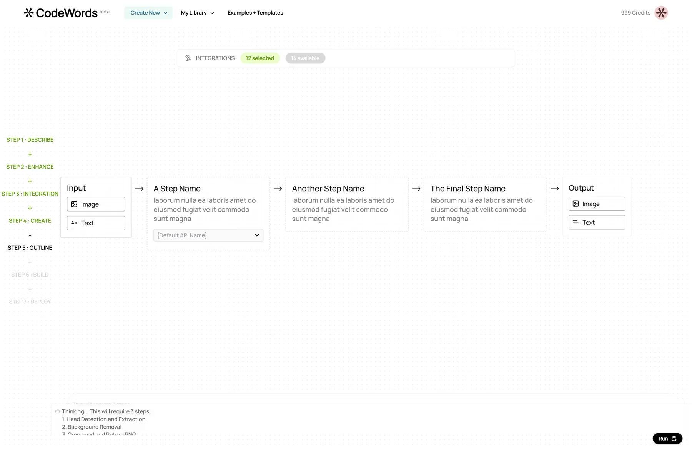
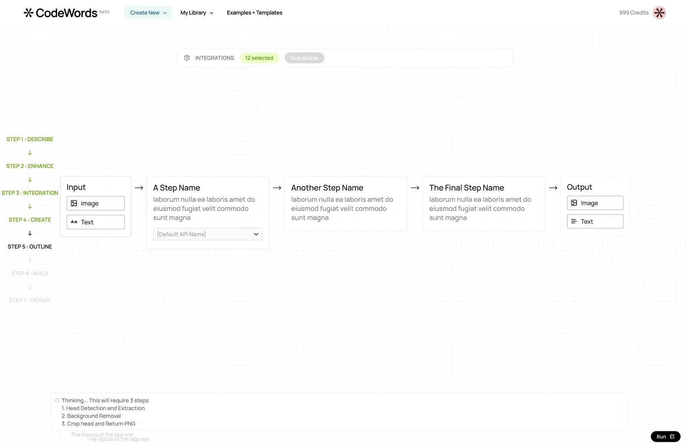
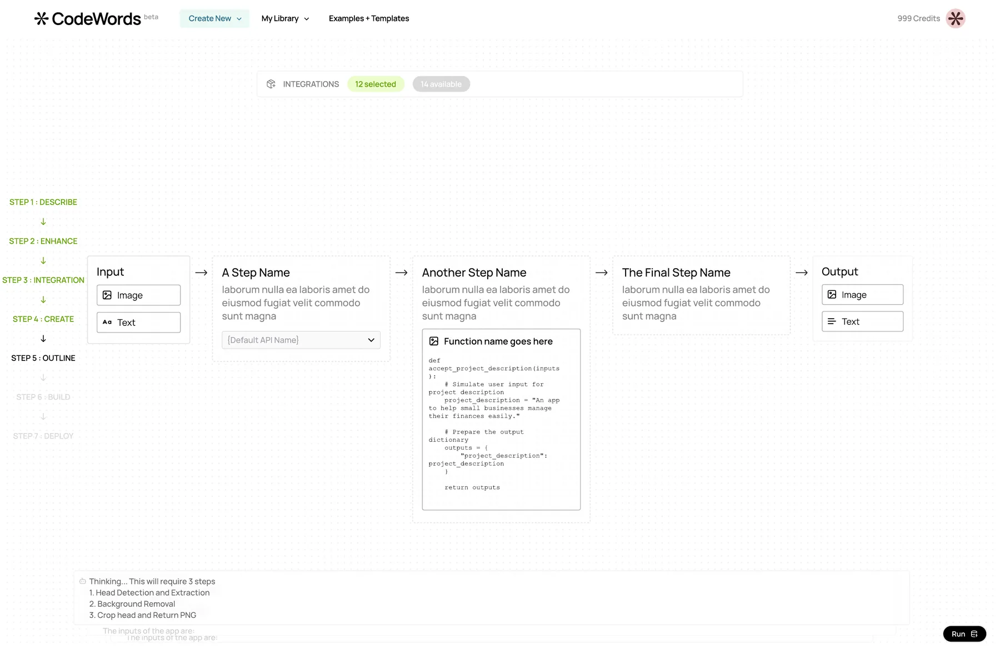
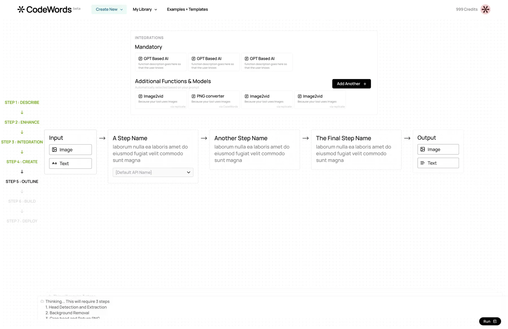
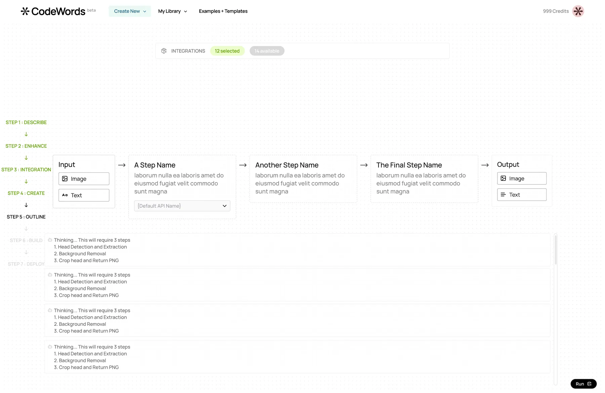

the problem with inventing a new thing
Agemo's CodeWords lets you describe a function in plain English and watch three AI roles — an Architect, a Developer, a QA — build it for you. None of that fits an existing user expectation. Which means every surface carries more weight than usual: it's teaching the paradigm before the user has even signed up.
We drew twenty-six frames for one product. The eighteenth is where we stopped fixing and started listening. What follows is a time-lapse — ten keyframes that carried the story, and the rest as quiet ticks on the scrubber.
the core weird bit
The Architect isn't a chat window. It's a room with three AI roles — a planner, a writer, a tester — co-designing a function with you, live. Making that legible on a single screen took five passes. Each one made one more piece of the system visible.
Click a version to peel the layers above it off. Or Show all to see the stack spread out in space, or Compare to watch v1 morph into v5 in one move.





what it taught us
The landing page couldn't explain CodeWords. The form couldn't either. The pink-crit pass on frame 18 told us why: we were trying to cram a multi-actor process into a single-actor surface. Once we let the Architect room have three AI roles out in the open — planning, writing, testing, each visible at its own moment — the product made sense in ten seconds instead of ten minutes.
That's the job when your product is a new noun. Not a brand pass, not a landing page, not even the one hero screen every designer wants to ship. It's a stack of disclosures — each layer making one more piece of the system visible, and no single layer carrying the weight alone. You don't explain the paradigm. You peel it.